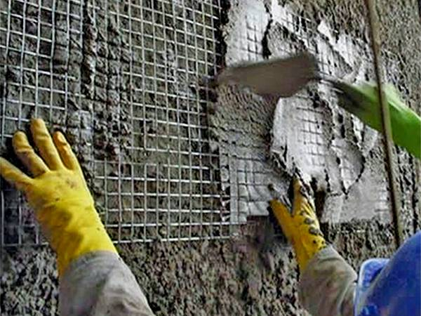
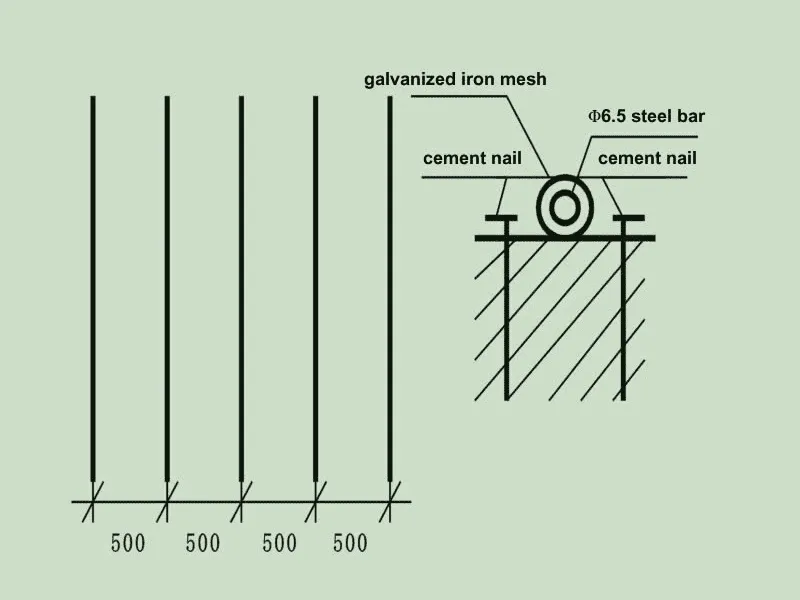
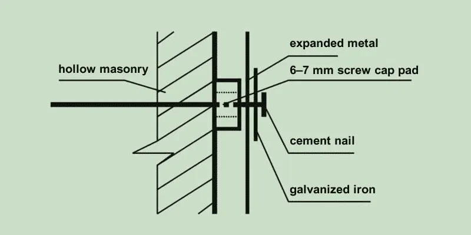

With the development and application of new wall materials and building energy management, saving energy and protecting land resources are important nowadays. The new material concrete hollow masonry has many advantages for the architecture but also bring new problems, wall cracks. Welded plaster steel mesh and expanded metal are the good choice to prevent the cracks.
The Cracks on the Wall
- The vertical cracks are under the window and the cracks are usually on the middle of the window. The cracks are usually from the window to the wall root.
- The cracks that happen because of the frost are usually on the place where snow and ice melts a lot. The cracks are vertical.
- The cracks on sunny side are more than the cracks on shade side. The cracks happen on the dividing line of the wall.
- The horizontal cracks happen on the roof and it's 500 mm far away from the house panel. Both sides of the exterior wall and the interior are cracks.

The welded plaster steel mesh is to reinforce the wall and prevent from the cracks.
The Reasons
The Temperature Effect
This problem usually happens on the north where is really cold. The low temperature could cause the small masonry cracks. The radiation of the sun is different on the wall because the position of the wall and the building is different. In the summer, it's hot and the temperature of the wall surface is 30℃ higher than the wall. The wall surface thermal expansion deformation is different from the wall. The thermal expansion deformation of the wall surface is more obvious than the wall. It cause horizontal thrust to the wall and then cause wall cracks. When it's cold, the wall could shrink because of the low temperature and it would also cause horizontal thrust to the wall. But the wall in the shade side would not crack.
The Material Effect
The concrete hollow masonry is affected to the material. The volume changes during time and the change would be stable after months. It would cause cracks when we plaster during the time. It could cause the structure quality problem.
The Characteristic of the Masonry
- The joint material is the slag cement. If the conservation is not good enough the masonry would shrink a lot. So watering the masonry and keeping it wet is necessary.
- Not shrink at the same time. The main material for the concrete masonry is cementitious material. When it is made for 28 days the shrinking get stable. But the ultimate shrinking is about 60%. The left 40% shrinking would cause the cracks when the masonry is built on the wall.
- The high moisture content. The masonry with too mush water would reduce its moisture content and cause cracks. The shrinking unit is 6.0–7.0 m and it would shrink for 0.002 mm/ m so the cracks would happen on the wall.
The Anti-Cracking Measures
Clear the Masonry
The connecting between the mortar and the masonry is not firm if the masonry surface is not clean. It would cause cracks so we should clean the extra mortar and keep the masonry neat.
Install the Steel Mesh
We use the steel mesh of 6.5 mm wire diameter and install it on the masonry. The galvanized iron mesh is used to fix the steel mesh.
Install the steel mesh according to the design drawing.

Install the Expanded Metal
The mesh opening is less than 2 cm. Put the expanded metal on the hollow masonry and the expanded metal is padded 6–7 mm high with screw cap. The galvanized iron mesh of 30 mm × 30 mm as the baffle is put on the lateral expanded metal. The galvanized iron mesh is fixed with the cement nail. The distance of the nails is 300 mm. To prevent from the rust, we choose the galvanized expanded metal.
To reinforce the wall with galvanized expanded metal.

Adjust the Expanded Metal
We could add the fixed points to keep the expanded metal stable after installing the expanded metal. The connecting between the expanded metal and the steel mesh is fixed with the tie line. The buckle should be hit to the side of the wall with the hammer to prevent from rust.
Hemp Lime Plastering
Inspect the above process and plaster the hemp lime on the wall. The hemp lime should be fully dispersed when we mix the hemp lime and the cement. The concentration of the hemp lime should be high and it's easy to handle.
- We should water the base wall two hours ago before we plaster the hemp lime.
- The thickness of the plaster hemp should be 10–12 mm.
- The expanded metal must be in the plaster hemp lime and can't expose.
- The plaster hemp lime should be smooth and there is not protrusion on it.
The Mortar Plastering
When the cement is solidified we plaster the mortar on the wall and the thickness is 8–10 mm. We could use more cement on the mixed mortar, for it could reinforce the wall.
The Construction Technology Process
Clean the surface → Install the steel mesh → Install the expanded metal → Adjust the expanded metal → Hemp lime plastering → Mortar plastering → Puttying, swabbing.
The Summary
The development of the building energy saving technology promotes the progress for the new wall material and its construction. We should use the new material, new technology, new skill and even new equipment to achieve the application of the modern building material. The innovation for the new material would never stop.
"Welded plaster steel mesh and expanded metal are essential for preventing wall cracks in masonry construction, ensuring long-lasting structural integrity."
Need steel mesh and expanded metal for masonry wall reinforcement? At Kestrel Metal, we supply premium welded steel mesh and galvanized expanded metal for construction applications. Our experienced team provides technical support and competitive pricing with worldwide shipping. Request a Quote today — we respond within 24 hours with detailed specifications and pricing for your project.